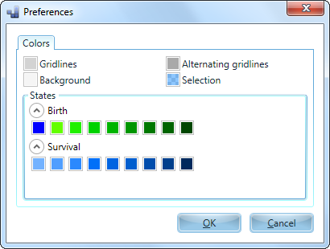

Preferences: Colors
The Colors preferences window looks as following:
Using this window you can set color preferences.
- Gridlines - the main color for the grid lines.
- Alternating gridlines - the color of grid lines every 10 cells.
- Background - the background color of the playing area.
- Selection - color of selected areas.
Section "States" contains the color settings for all states of living cells.
Colors of cells are labeled according to the previous state of the cell and can be divided into two categories, color for the cells on the previous generation who were born and the color of cells that have been continuing to live in the current generation.
The subsection "Birth" contains nine settings of colors of newly born cells. Zero state suggests that this cell has been set manually, while the remaining 8 states suggest that the cell was born with a corresponding number of neighbors.
The subsection "Survival" contains nine settings of colors for surviving cells, with different numbers of neighbors.